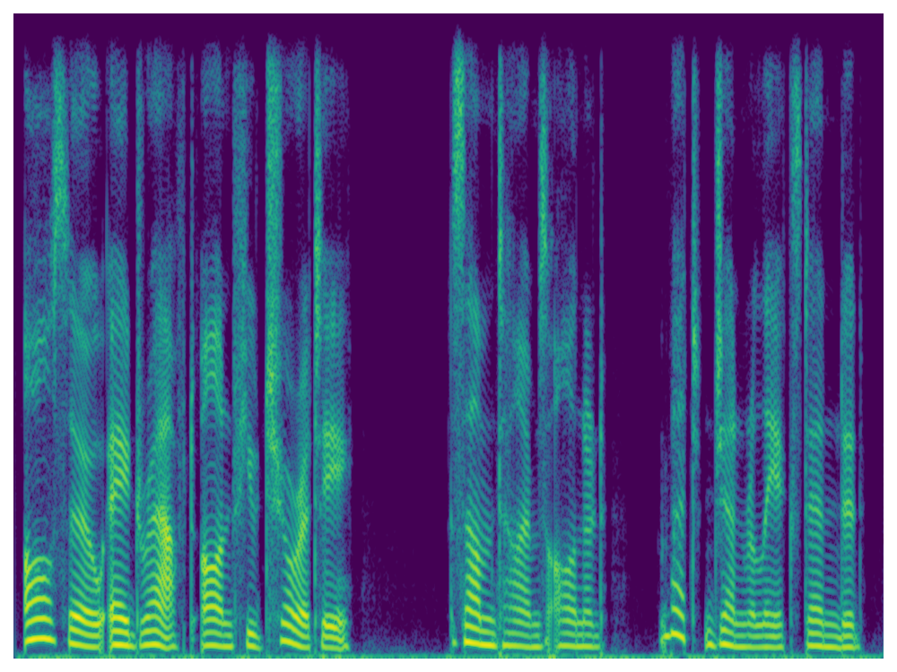
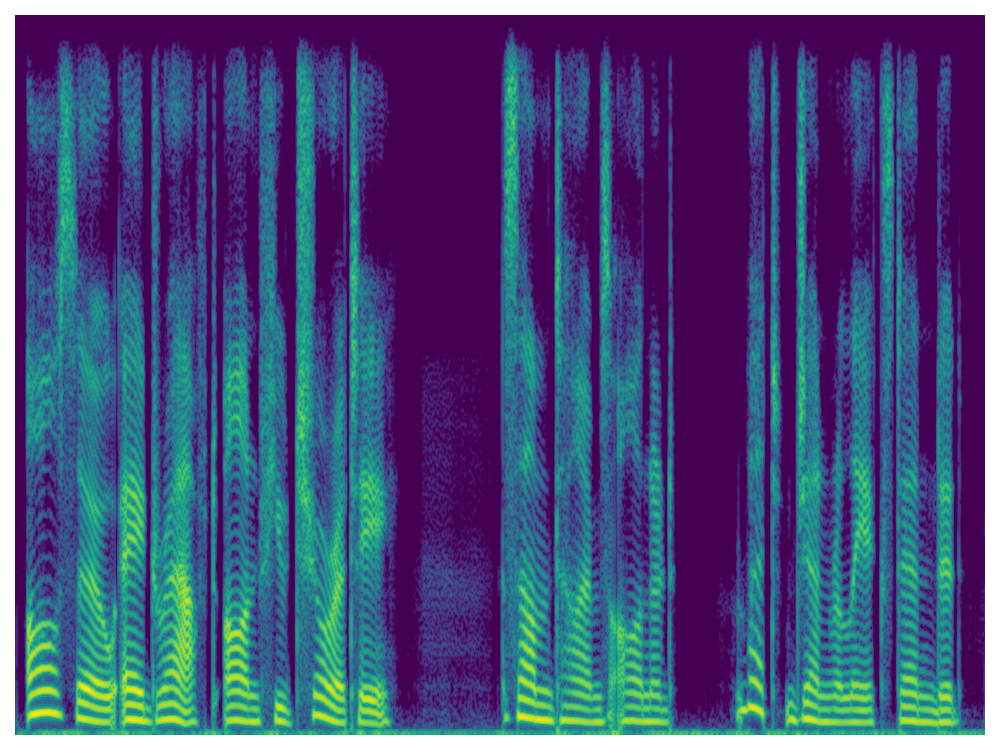
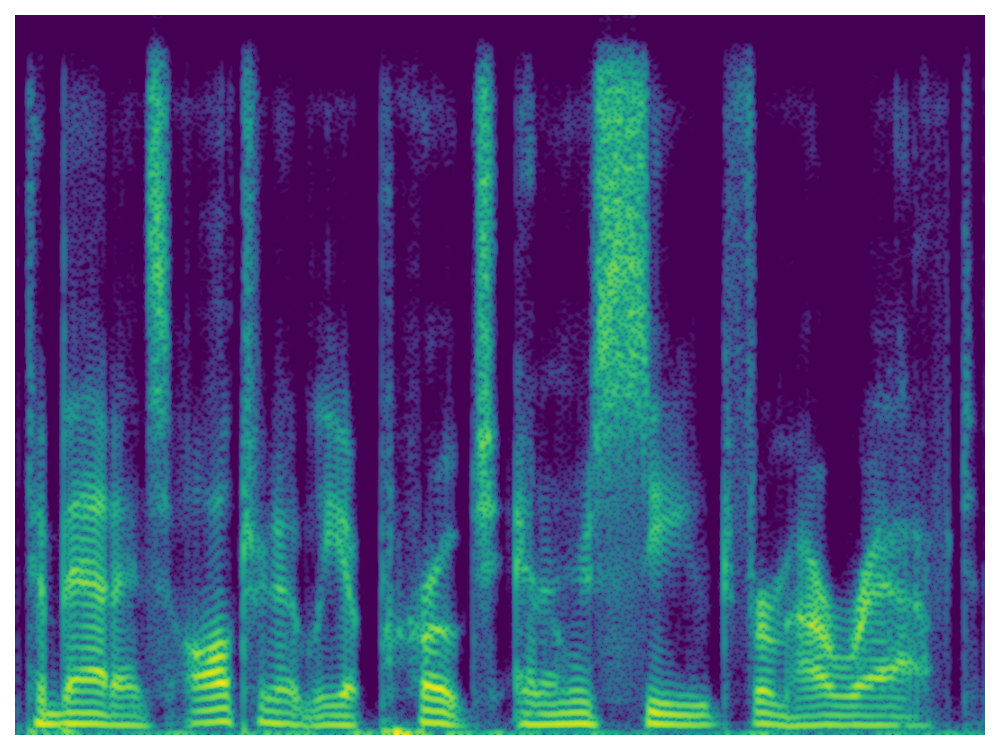
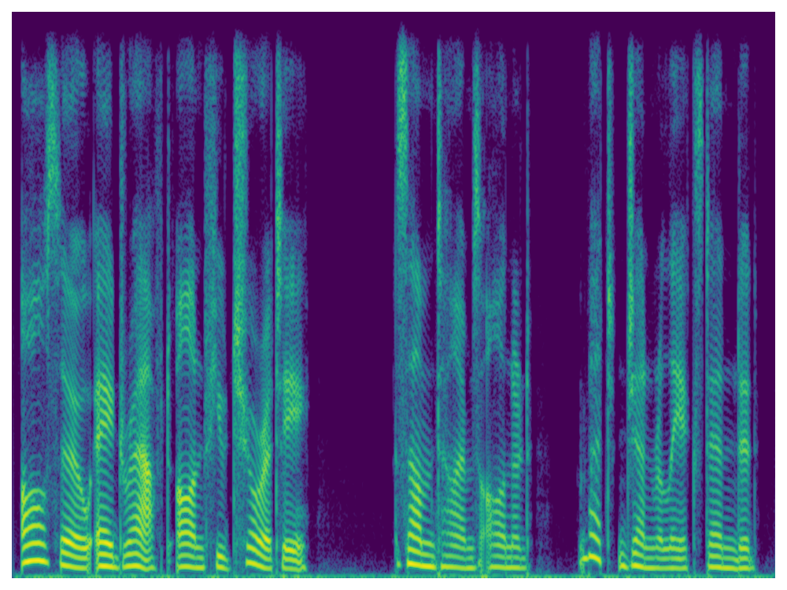
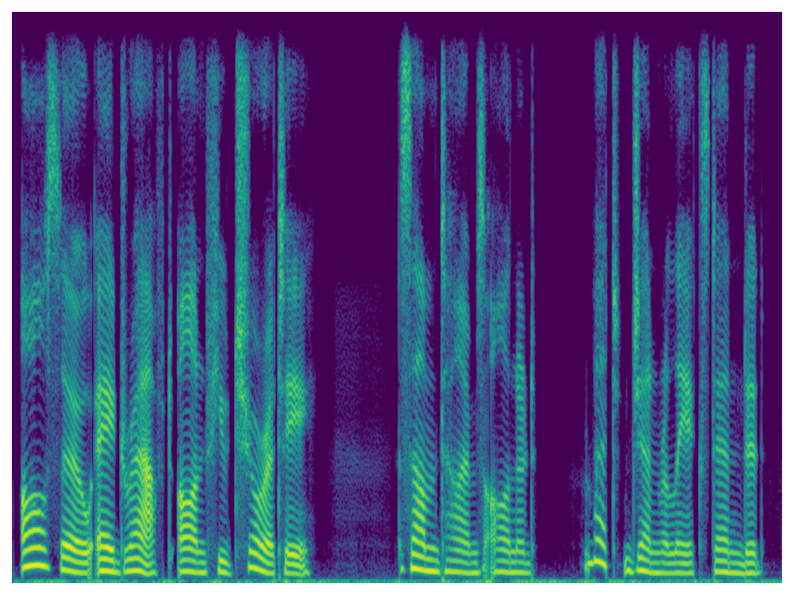
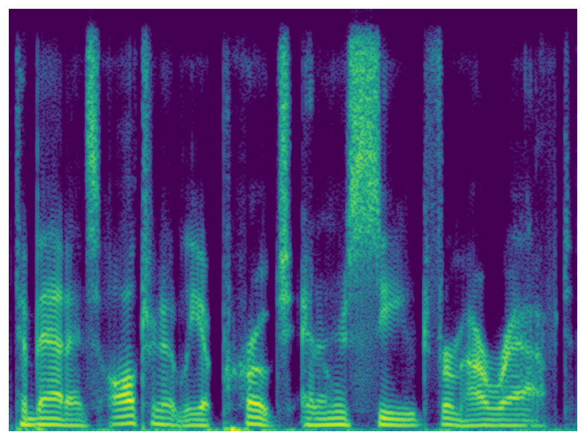

I. Speech Enhancement
| Natural Noisy | Natural Clean | CMGAN | MP-SENet | Codec Denoiser | |
| Sample 1 | |||||
|  |  | ||||
| Sample 2 | |||||
|  | |||||
| Sample 3 | |||||
| Sample 4 | |||||
 |
 |
||||
| Sample 5 |
Large language model (LLM) based zero-shot text-to-speech (TTS) methods tend to preserve the acoustic environment of the audio prompt, leading to degradation in synthesized speech quality when the audio prompt contains noise. In this paper, we propose a novel neural codec-based speech denoiser and integrate it with the advanced LLM-based TTS model, LauraTTS, to achieve noise-robust zero-shot TTS. The proposed codec denoiser consists of an audio codec, a token denoiser, and an embedding refiner. The token denoiser predicts the first two groups of clean acoustic tokens from the noisy ones, which can serve as the acoustic prompt for LauraTTS to synthesize high-quality personalized speech or be converted to clean speech waveforms through the embedding refiner and codec decoder. Experimental results show that our proposed codec denoiser outperforms state-of-the-art speech enhancement (SE) methods, and the proposed noise-robust LauraTTS surpasses the approach using the enhanced audio prompt.
| Natural Noisy | Natural Clean | CMGAN | MP-SENet | Codec Denoiser | |
| Sample 1 | |||||
|  |  | ||||
| Sample 2 | |||||
|  | |||||
| Sample 3 | |||||
| Sample 4 | |||||
|
|
||||
| Sample 5 |
| Text Prompt | Clean Prompt | LauraTTS (Clean Prompt) | Noisy Prompt | LauraTTS (Noisy Prompt) | LauraTTS+MP-SENet | NR-LauraTTS |
| The beggar's plea, the politician's sceptre and the drummer's ablest assistant. | ||||||
| If the child gives the effect another turn of the screw, what do you say to TWO children? | ||||||
| I can see Douglas there before the fire, to which he had got up to present his back, looking down at his interlocutor with his hands in his pockets. | ||||||
| An instant of wild flight had delivered him and the cry of triumph which his lips withheld cleft his brain. | ||||||
| "She will have to work, when she comes to life," said Margolotte. | ||||||
| She wanted a glance of the new books and periodicals and talk of great philanthropies and reforms. | ||||||
| Pursuing the direction given by this discovery, he entered the neighboring thicket, and struck the trail, as fresh and obvious as it had been before they reached the spring. | ||||||
| Altogether, the appearance of the individual was forlorn and miserable. | ||||||